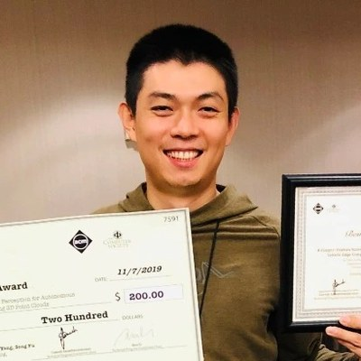
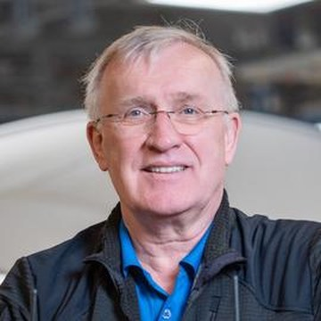

Simulators and world models for evaluation
Demos examine visual and temporal consistency, action-conditioned behavior, and the reliability of policy assessment. Demo Track details
1st Workshop Edition
Safety-Critical Autonomous Driving in Closed Loop
with a Demo Track and the NavSafe-∞ Closed-Loop Safety Challenge
How can we evaluate and improve safety when a driving policy's actions determine its future observations? SafeLoop brings together vision, robotics, simulation, and transportation researchers around two complementary tracks.
Demos examine visual and temporal consistency, action-conditioned behavior, and the reliability of policy assessment. Demo Track details
Driving policies are evaluated in closed loop on NavSafe-∞ safety-critical scenarios. Challenge details
The afternoon program combines six 20-minute keynotes, demo spotlights, an interactive demo and poster session, challenge results, and a panel on evaluation quality. Participants will examine how the choice of simulation environment affects closed-loop safety conclusions.
SafeLoop focuses on evaluating and improving safety through closed-loop interaction between driving policies and their environments. A policy's actions change its future observations, linking perception errors, planning decisions, and recovery behavior. Recent studies expose gaps between offline prediction quality and interactive driving performance, while generative simulation and data-driven evaluation create new opportunities for systematic testing. For the CVPR community, the central question is how visual representations, scene reconstruction, and world models translate into safer driving decisions.
We welcome end-to-end and modular systems, vision-language-action models, and contributions using diverse benchmarks. Topics include:
Zewei Zhou and Walter Zimmer lead outreach through the vision, robotics, and transportation communities, with particular attention to students and underrepresented researchers. Accessible slides, typed audience questions, and recordings with speaker consent will broaden participation. We will seek student travel support.
The organizing team spans five academic and industrial institutions and includes students, postdoctoral researchers, senior academics, and industry researchers. Speaker invitations seek complementary technical perspectives, career stages, and geographic representation, beyond the organizers' institutional networks.
| Time | Session |
|---|---|
| 13:30–13:35 | Opening and introduction to the two tracksOrganizers |
| 13:35–13:55 |
Keynote 1Keynote
Speaker TBD Affiliation to be announced AbstractTo be announced. Speaker bioTo be announced. |
| 13:55–14:15 |
Keynote 2Keynote
Speaker TBD Affiliation to be announced AbstractTo be announced. Speaker bioTo be announced. |
| 14:15–14:35 |
Keynote 3Keynote
Speaker TBD Affiliation to be announced AbstractTo be announced. Speaker bioTo be announced. |
| 14:35–14:50 | Demo Track: three five-minute spotlightsDemoSelected demos |
| 14:50–15:40 | Coffee, interactive demos, and research postersDemos & postersAll five demos and all accepted papers |
| 15:40–16:00 |
Keynote 4Keynote
Speaker TBD Affiliation to be announced AbstractTo be announced. Speaker bioTo be announced. |
| 16:00–16:20 |
Keynote 5Keynote
Speaker TBD Affiliation to be announced AbstractTo be announced. Speaker bioTo be announced. |
| 16:20–16:40 |
Keynote 6Keynote
Speaker TBD Affiliation to be announced AbstractTo be announced. Speaker bioTo be announced. |
| 16:40–17:10 | Challenge Track: NavSafe-∞ results and failure analysisChallengeTop three teams, eight minutes each, followed by six minutes of discussion |
| 17:10–17:25 | Panel: Simulation quality and safety evaluationPanelDemo authors, challenge participants, and speakers |
| 17:25–17:30 | Challenge awards and closing |
We invite papers on all topics of the workshop. We welcome end-to-end and modular systems, vision-language-action models, and contributions using diverse benchmarks. Demo submissions follow the same timeline; see the Demo Track.
Up to 8 pages, excluding references
Published in the CVPR 2027 workshop proceedings.
2–4 pages
Demos, work in progress, negative results, or position papers.
| Format | All submissions follow the applicable CVPR policies. |
| Review | At least three double-blind reviews per submission on OpenReview. |
| Review criteria | Technical quality, relevance, reproducibility, and discussion value. |
| Conflicts | A non-conflicted chair handles conflicts. Organizer-authored papers receive independent external oversight and are excluded from paper awards. |
| Author requirements | Complete your OpenReview profile. CVPR's limit of ten submissions per author applies. |
| Presentation | Every accepted paper receives a poster opportunity. |
| Submission portal | OpenReview link to be announced |
All deadlines are 23:59 Anywhere on Earth (AoE).
Simulators and world models for evaluation. The Demo Track showcases simulators and world models used to evaluate autonomous-driving policies. Demonstrations will show how evaluation quality depends on visual fidelity, temporal and geometric consistency, responses to ego actions, and interactions with other road users.
Authors present a controlled driving example and evidence of how simulator or model behavior affects a policy's decisions, failure modes, or scores. Comparisons with recorded observations or a reference simulator can make these effects visible.
| Submission | A 2–4 page non-archival abstract and a short demo video. Demos follow the paper review timeline. |
| Selection | The program committee selects five demos based on relevance to closed-loop evaluation, supporting evidence, reproducibility, and suitability for interactive discussion. |
| At the workshop | All five demos receive a station in the 50-minute demo and poster session. Three demos are selected for five-minute spotlights. |
| What to show | Live interaction or recorded rollouts that show successes, artifacts, and failure cases, with a brief description of the data, model, and compute used. |
| Equipment | Demo tables have power. Presenters bring their laptops and any additional display hardware. |
The Challenge Track hosts the NavSafe-∞ Closed-Loop Safety Challenge. Submitted driving policies are evaluated in closed loop on the photorealistic safety-critical scenarios of the NavSafe-∞ benchmark. Evaluating all methods on shared scenarios will show which approaches improve collision avoidance, rule compliance, and recovery, and which failure modes persist across policies.
Both pools cover the same 28 event types in four categories: Traffic Crashes, Vulnerable Road User Crashes, Traffic Violations, and Traffic Incidents.
The 280 published scenarios
Released on February 1, 2027, together with the devkit and baseline adapters. Use it to validate your policy and to compare with the 20 policies in the NavSafe-∞ paper.
Used forValidation and comparison
At least 140 unreleased scenarios, five or more per event type
The private pool never leaves organizer servers.
Used forFinal ranking
Rendered camera images, calibration, ego-state history, and a route instruction.
Code, weights, and an environment file, run offline on a single NVIDIA RTX 3090 (24 GB).
A future ego trajectory.
All entries share the same camera rig, controller, and vehicle model.
The NAVSIM/OpenScene training split, and any declared external datasets or pretrained models.
The top three teams present their methods and failure cases at the workshop. Prizes and sponsors will be announced.
Simulation results measure behavior under specified event distributions and modeling assumptions. They do not certify road safety or estimate real-world crash rates.
@article{bao2026navsafe,
title = {{NavSafe-$\infty$: Benchmarking Closed-Loop Driving Safety in Photorealistic Environments}},
author = {Bao, Yuxin and Ruan, Hongwei and Wang, Luobin and Zhao, Seth Z. and Leng, Ziyang
and Zhang, Zihan and Zeng, Yu and McAllister, Rowan and Christensen, Henrik and Zhou, Bolei},
journal = {arXiv preprint arXiv:2609.26618},
year = {2026}
}
Seth Z. Zhao
UCLA
Workshop co-chair
Luobin (Robin) Wang
UC San Diego
Workshop co-chair
Hongwei Ruan
UC San Diego
Challenge co-chair
Yuxin Bao
UCLA
Challenge co-chair
Zewei Zhou
UCLA
Walter Zimmer
UCLA
Charlton Shih
UCLA
Ziyang Leng
UCLA
Morui Zhu
University of North Texas / Toyota InfoTech Labs
Deyuan Qu
Toyota InfoTech Labs

Qi Chen
Toyota InfoTech Labs
Yu Zeng
Toyota Research Institute
Ruta Joshi
Toyota Research Institute
Rowan McAllister
Toyota Research Institute
Andreas Geiger
KE:SAI / University of Tübingen
Bolei Zhou
UCLA
Jiaqi Ma
UCLA

Henrik Christensen
UC San Diego
Tentative: Seth Z. Zhao, Luobin Wang, Hongwei Ruan, Yuxin Bao, Zewei Zhou, Walter Zimmer, Yu Zeng, and Rowan McAllister.
Senior review coordinators: Bolei Zhou, Jiaqi Ma, and Henrik Christensen.
We will recruit 15–20 external reviewers.